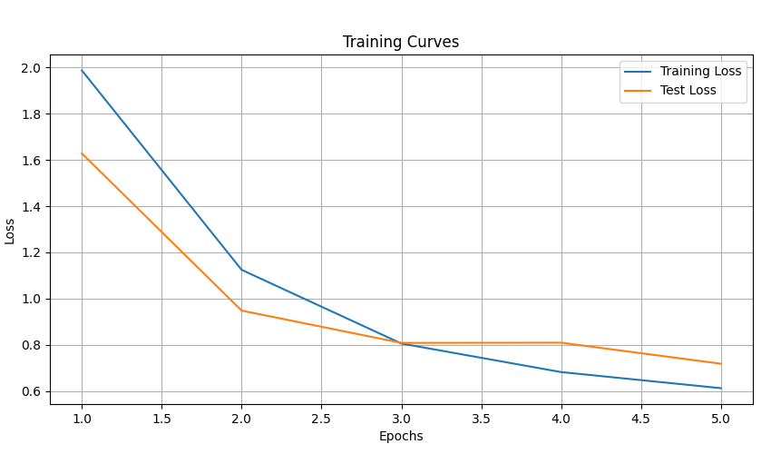

The problem
Reading the number on a house from a photo is harder than reading a scanned page. The digits can be large or small, in any font or color, at an angle, and set against brick, wood, glass, or plants, and most of the photo is not a digit at all. For the final project of Georgia Tech’s Computer Vision course, I built a system that finds the digits in a photo and then reads them.
How it works
The system has two stages, each with its own neural network, trained in PyTorch on the Street View House Numbers (SVHN) dataset: more than 73,000 digits cropped from Google Street View photos and scaled to 32 by 32 pixels.
- The photo is converted to grayscale. Where the background is busy, it is smoothed with a Gaussian filter and then reduced to black and white with Otsu’s threshold.
- A square window slides across the photo, and a detector network decides at each position whether the window holds a digit or only background. I trained it on SVHN digits against background patches cut from photos.
- A second network reads each window the detector kept, as a digit from 0 to 9. To center the digit, it tries the window shifted by up to 20 pixels in each direction and keeps the position where it is most confident. Windows that settle on the same position are counted once.
- The window size is set to the size of the digits in the photo, and for a slanted digit the window is also turned in steps of 15 degrees.
Choosing the network
For the digit reader I compared two networks. One was small, with four hidden layers, and trained from scratch on grayscale digits. The other was VGG16, a large convolutional network pre-trained on the ImageNet photo collection, with its last layer replaced and retrained for the ten digits. VGG16 took an order of magnitude longer to train, so the system uses the small network, which reached 83.1% accuracy on the SVHN test digits after five passes through the training data.

Results
On five test photos of house numbers, with one or two digits each in different sizes, fonts, colors, and light, the system returned the right numbers: 52, 4, 5, 3, and 8. The 3 was slanted and was found with a turned window.
On a sixth photo, of a front door numbered 34, it also took the door handle for a 1, since a short upright bar looks very much like the digit. Checking the area around each candidate, and rejecting shapes that belong to a larger object such as a handle, would prevent this kind of error.
Limits and next steps
The window size and the cleanup of the image were set for each test photo. Choosing them automatically, by searching over window sizes, would make the system general but slower. The search is already the slow part, because every position, size, and angle is a separate pass through the network. The windows do not depend on each other, so the search could run in parallel.